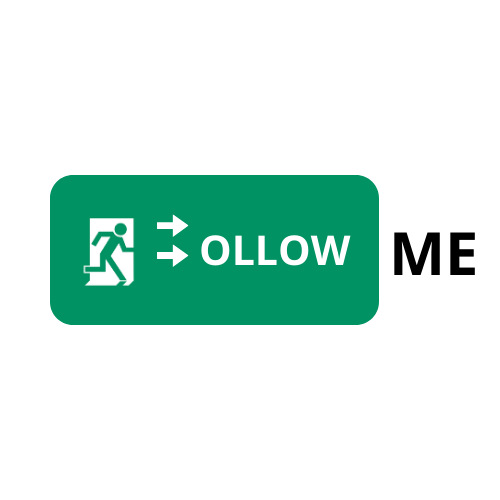

Progetti realizzati
Portfolio
Gestionale · PHP
GAV — Gestione Avanzata Volontari
Gestionale web per Comitati Croce Rossa Italiana e ANPAS: anagrafica volontari, turni e mezzi.
Visita il sito
Sito vetrina
Motorimessa Cadore
Sito vetrina per un'autorimessa con servizio NCC a Torino: presentazione servizi e contatti.
Visita il sito
Gestionale · PHP
CoachDany — Gestionale Palestra
Piattaforma gestionale per una palestra di Torino: iscritti, corsi, pagamenti e comunicazioni.
Apri il gestionale
Progetto scolastico
Follow Me
Web app di navigazione interna per l'istituto ITIS "G. Rivoira".
Visita il sito